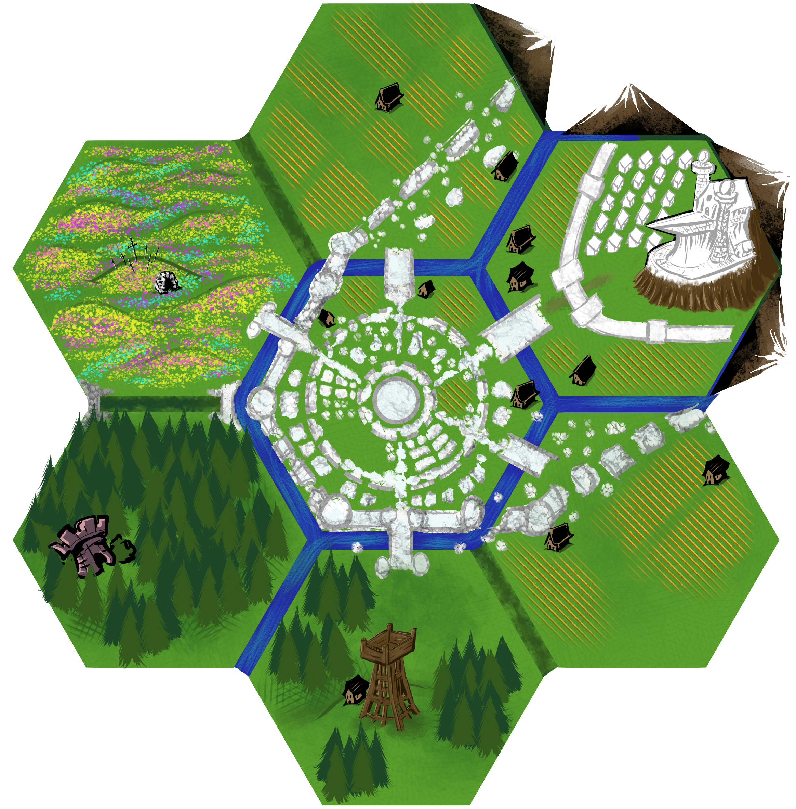
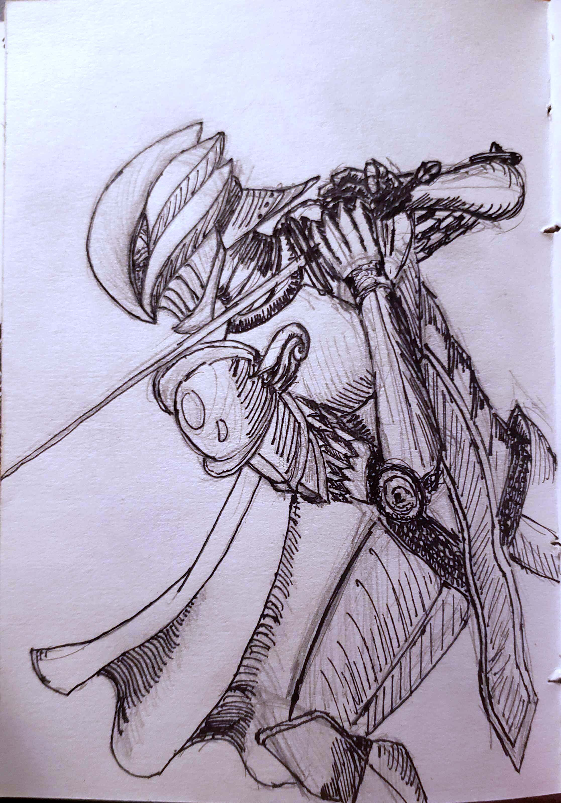
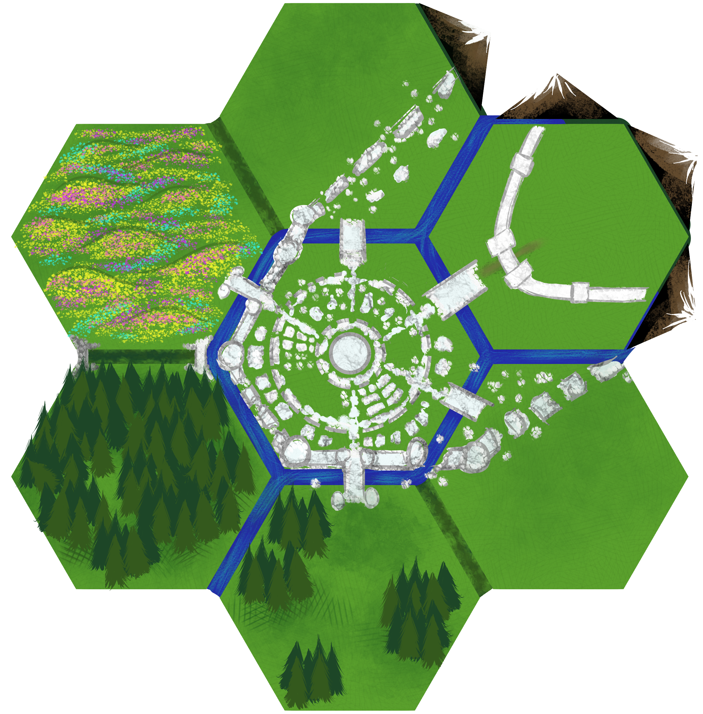

Woland: The Silver Cradle
William of "Half a Worm and a Bitten Apple" is hosting a community event to collaboratively create a realm called "Woland", where 20 people create small regions within a hex map for a Mythic Bastionland game. My turn has arrived and I chose the center hex flower numbered 11, which happened to feature the Seat of Power of the realm! I endeavored to create a Holding worthy of being a Seat of Power of legend! I hope you like Berserk.

The Silver Cradle in full.
The Silver Cradle
These lands are cradled by the mountains of the Silver Ridge in the northeast with the Silver Citadel of the Twin Peaks overlooking its subjects within. Once a shining bastion in the wilderness, the citadel stood above an immense fortified silver city with an outer wall and inner wall. Unfortunately, the outer wall fell long ago leaving the ruins of civilization to enclose the remaining inner city and its citadel.
| Hex | Name | Type | Terrain | Features |
|---|---|---|---|---|
| F4 | Fallen Fields | Wild | Lush Meadow | Bridge, Ruins |
| F5 | Wyrd Woods | Wild | Overgrown Woods | Curse, Hazard, Ruins |
| G4 | Northern Wall Ruins | Wild | Farms & Ruins | Dwellings, Ruins |
| G5 | Old City Ruins | Wild | Farms & Ruins | Dwellings, Monument, Ruins |
| G6 | Old City Outpost | Wild | Teeming Woods | Fort, Bridge |
| H4 | The Silver Citadel & inner city | Hold | Mountainside | Small city |
| H5 | Southern Wall Ruins | Wild | Farms & Ruins | Dwellings, Ruins |
The Cradle's Seasons
- Green Season (Spring)
- The Fallen Fields and all the ruins bloom with flowers and the verdant grasses grow tall. These flowers are said to bring visions of the past and the future.
- Gold Season (Harvest)
- The farmer's fields and the ruin's flowers turn gold like the sun
- Grey Season (Winter)
- All color fades, leaving the Silver Cradle to shimmer in its namesake.
- All color fades, except for the stained glass monument at the center of the old city ruins.
- The twin towers and other minor spires direct the sunlight with their concave mirrors and lenses to the monument to flood the ruins like a dream with a dazzling array of colors.
- The mirror focused light also provides warmth in this cold season, as long as the skies are clear enough.
The Cradle's Resources
- Farms
- Root vegetables: potatoes, onions, carrots, radishes
- Gourds: pumpkins, squash, cucumbers, zucchinis
- Wheat
- Livestock
- cows: meat, milk, cheese, hide
- goats: meat, milk, cheese, hide, double fleece for cashmere and brushes or interfacings.
- chickens: eggs, meat, feathers
- Silver Ridge is an ancient dormant volcanic mountain ridge
- Minerals including silver, iron
- Refined silver processing of the highest quality. Flawless mirrors.
- Gemstones
- Minerals including silver, iron
- Wood from the Wyrd Woods
F4. Fallen Fields
These fields glimmer with the morning dew and are often grazed by farmers' livestock when the grasses in the ruins are not enough. A bridge that once crossed the outer wall's moat, now river, stands as a defiant monument among the wall's ruins. A knight guards each end of the bridge keeping track of who enters and exits the old city. Anyone can pass and the ancient bridge serves as a road for efficient travel between the Fallen Fields and the Old City Ruins. However, the knight will challenge other knights to glorious combat, or stop more untrustworthy folk.
Bridges by Chris McDowall Each end guarded by a knight. Non-knights may pass peacefully, but knights can only cross if one of the company defeats the knight in single combat. The duel continues until one side yields, which the bridge knight will do only when mortally wounded. Defeating a bridge knight allows permanent passage for your company and grants 1 Glory.
Fallen King's Barrow
In the lightly rolling hills of this flower covered field lies a barrow of the Fallen King who once held a final battle for his silver city. The barrow blends in with the nearby hills as it is also covered in grass and flowers. The only thing that marks it are the swords plunged atop its mound and the two arching entrances made of stacked stones on opposite sides of the mound. This is a common monument visited by travellers. Travellers may spend a Phase to restore SPI here as if they were consuming a Sacrament.
Fallen King Lore
The Silver Cradle was once besieged in the past. After the collapse of the outer walls, the Silver Cradle was in dire straights. The king was able to expel the enemy forces from the city with a final heroic push. He pushed them to these fields which then became a bloodbath. The king fended off the foes and saved the city at the cost of many of his men and his own life, This barrow lies where he fell and now where he rests, grass covered in a field of blooming flowers.
G4. Northern Wall Ruins
The northern wall's moss covered ruins lie sucking into the earth. Farms reside on both sides of the once immense wall. They till the fields where the ancient stones do not rest and graze their cows and goats on the grass in between. Trees and shrubbery grows atop some areas of ruins not able to be tilled or cleared.
To the northeast the Silver Ridge climbs and mines are dug into its side.
Northern Mines
Mines are located in northeastern side of this hex, in the mountains. These mines provide minerals such as silver and iron.
H5. Southern Wall Ruins
Farms, ruins of the southern wall, and the ruins of an old Moon Mystics church.
Southern Mines
There are also mines in the mountains northeast of this hex.
G5. Old City Ruins
A stained glass monument sits in the center of the old city ruins. When the mirrors of at least the Silver Citadel's twin towers will reveal a hidden underground passage to a sacred grotto. Sparkling crystal clear waters trickle down the stone walls to the eternally blooming flowers and vibrant trees.
Grottos by Chris McDowall Impossible to find unless a local has given you the directions. These mystic caves are three, spread across the realm. Spending the night sleeping in one, utterly alone, grants a useful vision of the past, present or future, depending on the specific grotto. Such visions are too much for a knight's mind and cause d8 CLA loss. In spite of their similarity, Seers will strongly discourage knights from entering these places, and will scold those who have.
If these three grottos are connected, then it is by mythical means, not mundane. The Silver Thread may change this grotto.
The old ruins feature crumbled and overgrown buildings of moss covered white marble. Towards the southwest of this hex is a field once used for sports with broken stone stadium seating along the crumbled walls. These seats offer a fine view of the stained glass monument.
Farms grow in between the ruins. Scavengers sometimes still search these ruins. The sewer drains are plentiful in the streets.
G6. Old City Outpost
The old city's outer wall featured a southwest bridge that still stands like its northwestern twin. However, it faces a woods that increases in density as it grows northwest towards the Wyrd Woods.
The Silver Guard patrol the wall's ruins and frequently stop by the old, yet still operating outpost in these woods. The outpost features a wooden tower with a large silver mirror and bonfire at the top for signaling. The Silver Guard here know well the happenings of the neighboring hexes beyond the Silver Cradle, as well as the happenings within it too.
The Bridge Troll
This bridge is gate-kept not by knights, but by lumbering hulks whose hide is made of white and black marble that cracks at their joints. Upon their stone skin they etch a ledger of those who have entered and exited the old city by this bridge or around it. This includes their names, descriptions, payment if they used the bridge, or if they crossed the river moat by other means. Perhaps by climbing and jumping across the wall's ruins that jut out from the water or simply swimming across. While they are long lived and their memory is rumored to be infallible, they are not immortal. Their bodies remain within their hole under the bridge as an ongoing ledger for their descendants to continue.
These hulking creatures of stone are called trolls by the Silver Cradle denizens. The locals know to give the trolls a wide berth, treat them with respect, and to pay the damn toll! The trolls demand all to pay a toll to use the bridge, although they're particularly keen on enforcing this demand on strangers and certainly those who have failed to pay in the past. The Silver Guard also barter with the trolls for their services.
The trolls will accept promises from those who prove themselves as worthwhile future investments. But the debt is never forgotten and must be collected.
The Troll Hole Under the Bridge
This ancient family line of trolls lives under the bridge towards the forest end. This troll hole is not just their home, but is also their ancestral tomb and ancient ledger. Their ancestor's bodies are neatly organized based on the age and seasons.
Items around:
- Tarnished silver telescope. Extendable for seeing different distances.
- Diamond tipped chisel, used to write ledgers or fine details in stone.
- The bones of debtors
- Poetry on stone tablets written with such deep emotion, they would move even the earth.
- Hang drums crafted by these trolls in their free time.
- Obsidian tipped spears
The Old City Sewers
Under the bridge's end towards the old city lies an outlet for the old city's sewers. The trolls do not live in this end, instead you'll find all manners of vile vermin and crocodiles in a thriving ecosystem under the ruined city. These sewers are large enough to stand up and traverse with side walks and bridges.
F5. Wyrd Woods
Cursed and dense with mystical overgrowth, these murky woods are wild and hostile to travellers. The woods are home to deceitful Luna moths that play tricks of sound on those who venture within. A darkness slumbers within these woods, but a curse lingers to punish the hubris of humankind.
When the Company attempts to travel out of this hex, number the hex's six neighbors 1 through 6 clockwise and roll a 1d8. If the result is
- their intended direction, then it takes them double the time to travel as they pull from the Wyrd Woods' mystical grasp.
- the opposite of their desired exiting direction, then they find themselves in the Wendwoods (D1).
- 7, then they stumble upon the Twin Dark Fort.
- 8 and evening, then they witness the Moonlight Moth descend upon an elk or other travelling creature and gruesomely eviscerate and feast upon it before their eyes. The elk alone will not satiate its huger.
- If morning, then they got turned around and remain in the woods.
- Otherwise, they exit into that numbered neighboring hex.
The party may push through, losing d6 in VIG, to ensure they achieve their desired direction without delay.
Moonlight Moth
It is rumored that the mystical Moonlight Moth, which heralds an ancient doom, resides in these woods, although no one alive ever bore witness. This elegant androgynous humanoid of softly glowing pale skin with a moth head and lime-green wings captivates and devours wayfarers lost in these woods, especially at night. That's just a folktale to keep the kids out of the woods, of course.
- VIG 14 (or 3X+5 for X knights in The Company), CLA 14, SPI 7, GD 11 (or 3X+2)
- A1
- Sleeping Dust (Blast, VIG or SPI to resist 1d4 turns asleep, another can rouse them awake), bite (d8), tear (2d6)
- Their tells and attacks, which the Company are to avoid and exploit
- It reels back hacking and dry heaving, next turn it emits an immense cloud of sleeping dust in front of it (bigger than Blast).
- It lowers into a squat and its wings flutter then tense, next turn it will take flight, grabbing and lifting a creature with it to the sky.
- The flutter of immense wings is heard, next turn it lands atop a creature with a Blast from its pounce and emits a puff of Sleeping Dust
- A shrill scream is heard, next turn a lunar beam of light strikes a target (ranged 2d8 blast). Must land, winded and catch its breath. Cannot use this move again before 1d6 turns.
- Mirrors reflect this light.
- Weak to fire, dazzled and drawn to light.
Twin Dark Fort
Hidden deep within these woods is the ruins of an old fort, now overgrown and fostering an ancient wound yet healed. The air within hangs stagnant, pungent with decay. The darkness within shrouds and swaddles a pair of sleeping beasts. Siblings of the dark.
The Taurus Twin
One, a lumbering giant, boasts immense horns upon its head. All the better for goring honorable knights in full plate. Its limbs are entwined with swelling sinew that effortlessly carry its hulking frame on huge cloven hooves. All the better for stomping the bones and dreams of merry men. The beast swings overhead an axe carved of stone with an obsidian edge. All the better to cleave a fine meal of marrow and meat.
- VIG 18 (or 3X+9), CLA 14, SPI 10, GD 15 (or 3X+6 for X knights in The Company)
- A4 (bypassed by Seer blessed blades)
- Greataxe (2d10, slow to humans, but to it hefty), claws (d8), smash (d6), gore (d12)
- Their tells and attacks, which the Company are to avoid and exploit.
- When it raises its axe above its head, next turn it will smash in front of it
- When it twists its sinewy torso, winding its axe behind it, next turn it will swing wide hitting all nearby in front of it with a devastating cut.
- When it lowers its head and stomps its hooves, next turn it charges at those in front of it and keeps going till it hits all opponents within charging distance.
- Those hit risk getting gored upon its horns or crushed under its hooves.
- Weak in its loins, face, and throat.
- It is unable to easily reach anything on its massive back and a good handaxe can hook into its hide.
The Capra Twin
The other, tall and gaunt. Light on its feet, a capricious dancer bears an exposed goat's skull for a head with a broad brow and arcing horns. Its bony clawed hands wield two crude yet sharp butcher's knives the size of a knight.
- VIG 17 (or 3x+8), CLA 18, SPI 14, GD 12 (or 3X+4)
- A4 (bypassed by Seer blessed blades)
- duel wielded Greatswords (2d10, Long to humans, to it not even hefty), claws (d12), ram (d8), kick (d6)
- Their tells and attacks, which the Company are to avoid and exploit
- When it lowers its body in a squat, next turn it will jump at the Company bringing down its greatswords (or claws if disarmed) and hooves upon any under it.
- A many sturdy spear underneath it would be... Unfortunate for it.
- When it winds up its arms with one of its greatswords behind it, next turn it will throw the blade at an enemy, cutting any in its path.
- It is then disarmed of that blade and will sprint and jump to retrieve its weapon.
- When it stomps its feet, next turn it charges at The Company slashing at all in its way.
- When it lowers its body in a squat, next turn it will jump at the Company bringing down its greatswords (or claws if disarmed) and hooves upon any under it.
- Weak spots are its eyes, joints, and throat.
- Breaking a leg or impeding its fast speed would lead to its downfall.
The folktales say, "You'll know its too late when you feel your body reverberate from the tremors of their roar that turns into a rattling bleating."
The Moon Knight and their Greatsword
Behind these slumbering twins within the fort, lies a corpse. This fort has become the impromptu tomb of the Moon Knight from ages ago. In the stone walls they carved, "I pray thee, take me homeward to the west. Lay me among the bones of my brethren. Take my sword as payment." Clasped in the knight's hands is their dimly glowing Moonlight Greatsword.
While carrying the Moonlight Greatsword, the Company is unknowingly cursed.
- If the body is desecrated, the greatsword shatters into moonlight.
- If they abandon the corpse, the greatsword dims and becomes too heavy to swing. You must drag the sword with you. Every hex that moves away from the corpse is treated as travelling blind (Mythic Bastionland pg.18) causing the Company to lose their way.
- While also carrying the body, every hex they enter that moves away from Hex C6 in Peter's Lowlands is treated as Cursed causing them to lose their way.
Upon laying the Moon Knight to proper rest in the moon sands of Peter's Lowlands, the Moonlight Greatsword glows stronger and feels as light as a feather to the wielder. Once a day, the wielder may swing the sword to launch a slashing beam of light that travels forward cutting through armor.
H4. The Silver Citadel of the Twin Peaks
The Silver Ridge lines the northeast edge of this area, a long dormant volcanic ridge known for its silver and gem mines and for the prominent Twin Peaks that rise above the others at the center. Built into the mountainside, cradled by the ridge is the Silver Citadel that perches above a small yet fortified city of gleaming white marble. Newcomers are often enchanted by the citadel's majesty as it gleams in the sunlight of the day and in the moonlight a clear night. However, the knights and those who dwell here know that the citadel is not The City, but a flawed reflection of their dreams. For The City's walls and buildings would surely never crumble to ruin as the old Silver Cradle has... Would they?
The Silver Citadel features a pair of towers at its top. One for the sun's blinding brilliance, where the Solar King shines upon the lands and earthly matters of his people. Another for the wise reflections of the moon, where the Lunar Queen looks beyond and practices her mysticism. Together, the twin thrones light the way for the people of the realm as the Seat of Power.
Key Characters
The key characters of interest in the Silver Cradle along with their desires, beliefs, likes, dislikes, and bonds ordered by most favorable to least.
The Solar King, Tigris Sylvanus
A grieving widower, this old king rules the realm from his silver throne. He is said to hail from an unknown forest. Despite his age, he is a capable knight adorned in mirror-like gold armor with silver stripes and accents. Although, he is a faded figure of his past magnificence.
- Desire: He swore to seek The City for the good of his people.
- Belief: The City exists and is worth pursuing, but his people are here now and need him. If he can make the Silver Citadel a good reflection of their shared dream of The City, then he would be satisfied.
- Likes: Elegance, honor, respect, strength, resilience, those with resolve
- Dislikes: Uncouthly behavior, stolen valor, and irreverence for those of earned glory
- Bonds:
- Priscilla: Fatherly love for his precious daughter.
- Serenity: Believes his beloved late wife and queen was completely transparent and honest with him.
- Sir Llywelyn: Sees him as a dignified young man, valiant knight, and as a son he never had.
- Sir Wulfhram: Sees and respects his strength and resilience, but finds him crass and ultimately subservient to Llywelyn as his ambitionless, deathless dog who is aimless without his master.
The Late Lunar Queen, Serenity Sylvanus
As the fates demand, the Solar King and Lunar Queen ruled this realm side by side with the king's might and queen's mysticism. However, a supposed accident occurred in the Lunar Tower and it caught aflame. The Queen is believed to have been unable to escape and burned with others of her mystical Lunar Order. All that remains is the charred skeleton of the Lunar Tower and her shimmering, empty throne.
- Desire: To be rid of Llywelyn and Wulfhram
- Belief: Llywelyn and Wulfhram are harbingers of the end of the world.
- Likes: The moon and mysticism. Her Moon Mystic suitor.
- Dislikes: Being ignored or unloved by her beloved King.
- Bonds:
- Priscilla: Motherly love. Her sweet precious Priscilla to inherit her moon mysticism.
- Tigris: Loves him, but feels unloved and ignored by him.
- (Sir) Llywelyn: Dread and wishes him dead.
- Wulfhram: Uncomfortable Dread. Can we even kill this dog?
Princess Priscilla Sylvanus
Sheltered from the harsh and cruel world, this delicate lady is as pale as moonlight. She grieves her mother who suddenly passed away in an accidental fire in her lunar tower. Princess Priscilla now diligently works to fill her mother's vacancy as the Lunar Queen.
- Desire: To be with Llywelyn and bring about peace to the realm.
- Belief: Llywelyn and the faithful who follow him are bringers of clarity and peace for the realm.
- Likes: Soft, fluffy, warm things. Moonlit walks in the garden.
- Dislikes: Being dependent. Being used.
- Bonds:
- (Sir) Llywelyn: Romantic love interest
- Father Tigris: Loves her father dearly
- Mother Serenity: Loves her mother dearly, but dislikes the pressure and limitations her mother places upon her.
- Sir Wulfhram: Uncomfortable Dread, but okay when he's under the command of Llywelyn.
Llywelyn the Silver Hawk
This young, ambitious knight is renowned for his skill in duels and his prowess on the battlefield. He leads the Band of the Silver Hawk, once a famous mercenary group, now the valiant sword of the Silver Citadel. When in peaceful situations, he is like a child full of wonder and joy.
- Desire:
- To claim the sword and throne of The City.
- To be seen, understood, and chosen to be with by a peer.
- Belief: Swore to seek and claim The City. Believes he is the rightful Ruler of The City and will claim it.
- Likes: When the strong and capable choose to join him.
- Dislikes: Disregarding or betraying one's freedom and free will. Those who would harm his people, in particular the Band of the Silver Hawk.
- Bonds:
- Wulfhram: Brotherly love. Respects his capability. Respects his choice in choosing to join the band at the beginning and for returning to him when he left.
- When Wulfhram returned, Llywelyn challenged him to duel like before when Wulfhram first joined and when he last left. In this challenge, Wulfhram proved his might and resolve and honored Llywelyn in standing by his side again.
- His most powerful weapon.
- (Princess) Priscilla: While there is appreciation for her and her interests, she is another stepping stone towards his dream.
- King Tigris: Respects his history and the power he wields. Sees him as a stepping stone on his path to achieve his dream.
- Queen Serenity: Only Llywelyn and one other noble as a witness know that Llywelyn trapped the Queen and her mystics within the tower and set it ablaze.
- She did not approve of him and wanted him removed from play, especially since she disapproved of him for her daughter. Knowing this, he acted first.
- Wulfhram: Brotherly love. Respects his capability. Respects his choice in choosing to join the band at the beginning and for returning to him when he left.
It is rumored among mystics and oracles that Llywelyn is chosen by divine right to claim The City and will do so regardless of the cost.
He carries a blood red Beherit, a droplet as hard as diamond and as tough as jade, yet with the texture of human skin. This droplet is covered in small closed eyes, mouths, and noses. The Beherit is rumored to lead to the Otherworld and bestow unfathomable power upon its bearer. The Beherit will activate for Llywelyn when he willingly sacrifices all that he loves for his dream.

The Silver Hawk, Llywelyn.
Wulfhram the Undying
Stubborn, strong headed, and anger prone, especially in the past, Wulfhram struggles with finding his place in the world. For now, he has found that place to be beside Llywelyn as a friend and peer. He freely offers his blade to his friend and walks beside Llywelyn on his journey to realize his dream.
- Desire:
- Swore to seek The City and protect Llywelyn and those of the Band of the Silver Hawk.
- To be with his friends
- To be a peer to Llywelyn, which he believes is necessary for their friendship to be true.
- Belief: Llywelyn means well, especially with regard to his friends and the Band of the Silver Hawk
- Likes: A good fight. Strength, resilience, & resolve. The company of his friends.
- Dislikes: Cowardice, being forced to do anything, liars, and deception. Also dislikes social events.
- Bonds:
- Llywelyn
- If requested so by Llywelyn, he will pursue any prey, including our heroic Company
- Tigris: Respects the old knights capability even in old age, but thinks little of him.
- Llywelyn
It is rumored, especially among mystics and oracles, that Wulfhram is fated to betray the Silver Hawk and, in doing so, all the seers of the realm.
Factions
The factions organized under a leader. Some have warbands detailed later.
- Lunar Queen
- Moon Mystics: A cult of lunatics, as in moonstruck lunar fanatics.
- often celebrate the phases of the moon.
- Queen Serenity's followers believe Llywelyn will bring doom.
- Princess Priscilla's followers believe Llywelyn will bring peace.
- Moon Mystics: A cult of lunatics, as in moonstruck lunar fanatics.
- Solar King
- Guardians of the Silver Sun: A special group of the Silver Guard that protects the Solar King.
- The Silver Guard
- The Silver Hawk
- The Band of the Silver Hawk
- The Dread Wargs, see below for nuance.
- The Petty: There are various nobles and knights whose interests lie in claiming more power, whether within the current regime or under a new one. It is tension and squabbles all the way down. Recent dissenters to the Silver Hawk were in the fire of the Lunar Tower. How convenient for him.
The Warbands
Three strong warbands call this hex home and serve their leaders who swear fealty to the Solar King and to serve the people of the Silver Cradle and the realm.
The Band of the Silver Hawk
The original and expanded warband of mercenaries that follow the Silver Hawk. This is the best of the best. A versatile and capable group. Experienced in fighting together and knows how to communicate with each other. Loyal to the Silver Hawk to a fault, but that loyalty was earned. These are often not your nobles or pampered city folk. These people grew up in tough times and know what it takes to survive in a harsh world.
- VIG 13, CLA 11, SPI 12, GD 4
- A4 (gambeson, cuirass, visored sallet & bevor (helm), kite shield), steed
- Lance (d10 long/hefty if mounted) or longsword (2d8, hefty), shield (d4)
- Use lance when mounted, else, longsword.
- Charger
- VIG 10, CLA 5, SPI 5, GD 5, d8 trample
Often use a mobile wedge formation and charge with the goal to relocate.
The Silver Guard
The only thing keeping them from all being Silver Knights is the lack of Seers knighting them. Those in the Silver Guard train regularly and strictly to protect their homes. Every able-bodied person of the cradle is trained and serves at least an age in their militia. If there is no one to till their fields, then their neighbors are sent to do so in their absence. The Solar King does not accept a weak people; not in an era of mythical doom with the citadel's ruinous history staring him back in the face every day.
Shieled Spearmen
- VIG 10, CLA 13, SPI 10, GD 3
- A3 (mail, sallet helm & bevor, round shield)
- Spear (d8 hefty), shield (d4), handaxe (d6)
Archers
- VIG 10, CLA 13, SPI 9, GD 3
- A2 (mail, nasal helm)
- Curvebow: (2d6 long), shortsword (2d6)
They use a defensive phalanx formation to stall. Strategy is to outlast utilizing diversion through defensive positioning and archers. Aligned with the Solar King and proudly serve the Silver Cradle.
The Guardians of the Silver Sun are as the Shieled Spearmen and Archers above but have +1 to all virtues and guard.
The Dread Wargs
When Wulfhram left to find himself and to become capable enough to be a peer to Llywelyn, he eventually formed his own mercenary warband. When he returned, they followed. The members are as fierce as he is, although half are more money motivated than those of the Silver Hawk due to his lack of charisma. The other half though are as loyal as they come.
- VIG 14, CLA 13, SPI 10, GD 5
- A3 (mail, brigandine, bucket helm)
- Greatsword (2d10, long), handaxe (d6)
- Their preferred battlefield is rocky fields, much like those of ruins or mountain sides.
An aggressive skirmish formation. Strategy is to assault utilizing brute force. They onslaught with the goal to intimidate.
They are in conflict with prophecies of local mystics. There is tension between them and the silver hawks, and the rest of the Silver Cradle, however they serve Wulfhram and tear apart any opposition.
A Thread of Silver
Similar to "Holding Threads", The Silver Citadel is ripe with political intrigue as knights and nobles across the lands try to improve their standing or even secure the Seat of Power for themselves. However, the warden should pick how frequent these occur and pace them as desired. Given the scale of this thread's change to the realm is similar in impact to some Myths, I recommend to have this progress at most while within the Silver Cradle region. Otherwise, to occur when visiting the Holding only or whatever fits the flow of play.
Thread Roll
- 1: News arrives of the next Omen from the Seat of Power's Holding Thread
- 2-3: Trigger the next Omen from this Holding's Thread.
- 4-6: Court is quiet enough, no big surprises
Omens
- Upon first coming to this land, the Company face false rumors that they harbor ill will towards the Silver Citadel, either to claim it as their own or to topple it and the Solar King.
- The people of the Silver Cradle heard of these rumors and until their names are cleared will react sourly to the Company if their titles are discovered.
- Knights or the Silver Guard would be suspicious and question the Company as unknown knights. If they learn who the Company are, they take them before the court.
- When at court for the first time, a knight challenges the intent of the party. These newcomers, can they be trusted? Have they sworn fealty to our king?
- The Company encounters a wailing prophet dressed in the garb of a Moon Mystic. They claim the Silver Hawk and his dreaded dog herald doom for the kingdom. After sharing this doom and leaving sight of The Company, the mad prophet cannot be found again.
- In his rambling, the prophet mentions the Moon Mystics are having a moon mass with the next phase of the moon.
- A seasonal ball is held, all knights and their Company are invited.
- A knight or noble makes a scene that challenges the Solar King's capability to rule. After all, he couldn't protect his Queen.
- The King publicly announces the marriage between his daughter to the Silver Hawk, Llywelyn.
- Moon Mystics are frequent in the evening. Always up to something. May be noticed during the ball.
- The King falls ill. The Moon Mystics are active at night and frequently visit the burnt lunar tower.
- Hushed whispers of foul play
- A schism occurs! The Dread Wargs are halved. Wulfhram escapes but most loyal to him are imprisoned. The rest of the Dread Wargs swear fealty to Llywelyn.
- Illness takes the King. Llywelyn takes the throne. A black swordsman seeks the Company for aid to free his friends and enact his vengeance.
- If Llywelyn succumbs to desperation and his wish is heard by the Beherit, then the prophecy is as foretold. The Beherit awakens, eyes wide, screaming like a newborn babe. A blood moon rises. The Wyrd Woods stir. The rivers run red with blood. The darkest, most twisted reflections of the people roam the cradle and spread across the realm.
If the Silver Thread's omens complete, the region changes immediately.
- the secret grotto wilts and the waters turn to blood as the cradle's heart bleeds.
- The dark twins awaken and feast upon humanity.
- The Moonlight Moth flies beyond the boundaries of the Wyrd Woods, preying upon the unfortunate at night.
Every hex in the region of the Silver Cradle has an encounter with a dark monster on a 6 of the Wilderness Roll. 4 or 5 remain for encountering the Hex's Landmark or all is clear. At night, a 5 indicates an encounter with a roaming monstrosity like one of the Dark Twins or the Moonlight Moth.
Open Threads
Open threads of fate yet woven. Perhaps they are tied down elsewhere in the realm?
All these different knights, yet who and where are their seers? After all, every knight has a seer.
- Seer of the Silver Hawk, Llywelyn?
- Seer of the Solar King, Tigris?
- Who was, and perhaps even still is, the Seer of the Cursed Knight, that deathless dog, Wulfhram?
- Are these seers of this realm or of a far away land?
- Given the moon mysticism of the Lunar Queen and her order, is there an associated Seer or Knight?
- Seer of the fallen Moon Knight? Moon Seer is one that would make sense.
- What actually happened to the Lunar Queen? Was she unable to escape the fires... or perhaps she and her cohort found a way out a locked tower?
Where does the flawless silver mirror in the burnt lunar tower lead?
The ruins of the citadel's outer wall tell a story. They must have fallen long ago to some invasive force. The truth hides beneath the rubble and dwells within the shadows, evading the citadel's radiance.
The secret grotto of the Silver Cradle is one of three in this realm. Where are the others?
Imports desired includes
- salt
- seasonings, spices
- fruit
A Designer's Musings
I wanted to invoke the mythical world of Arthurian Romance with the echoes of fantasy knights from the stories that followed it. I took inspiration primarily from Berserk and Dark Souls with some from Minas Tirith of Gondor and Helm's Deep from Lord of the Rings. I took ample inspiration from Berserk and Dark Souls.
- Llywelyn was inspired by Griffith where I asked, "What if Griffith didn't crack when Gut's left, but rather kept his composure and focused on his goal?"
- Ornstein from Dark Souls.
- Wulfhram inspired by Guts and the Skull Knight of Berserk.
- The Solar King Tigris inspired by Ornstein and Gwyn from Dark Souls and the whole royal family from Berserk.
- If there were an ancient hundred acres of woods, I bet King Tigris would be related to it. ;]
- The Lunar Queen by various Dark Souls and Elden Ring bosses and Berserk's Queen of Midland.
- The Twin Dark Demons are inspired by Dark Soul's Taurus Demon and Capra Demon, where the Taurus Demon is also unquestionably inspired by Berserk's Zodd.
- Moonlight Moth is inspired by Berserk's Rosine and Dark Soul's Moonlight Butterfly, all of which are inspired by the Luna moth.
To add some political intrigue of Arthurian Romance and historical feudal lords, I wanted to throw in a political wrinkle that affected the Company in the civilization side of the game. This is why I detailed the characters as I did to help inform the social dynamics, and to prime the Company for things being wrong by being immediately on the business end of politics attempting to gatekeep them from the Solar King's Court. This emphasizes the turmoil in the human side of the world, along with all the mythical happenings as well.
I actually wrote the Citadel and its social climate first, but to help focus on the hex flower, which is what everyone is here for, I put the lands up front.
I like using the word "Beherit" instead of "behelit", where the latter is more often used in the Western translation of Berserk, because be-herit is then "be-" as in "near, by, around, utterly" and "-herit" as in "inherit" so to be an heir. The carrier of a Beherit is near by and then becomes an inheritor of terrible power. Befitting!
Because Berserk and Dark Souls are known for their big bad boss monsters, I took a stab at some Mythic Bastionland stats for these monsters following this post by Chris McDowall and some more consideration of house rules for boss monsters. I followed these latter recommendations along with adding in Dark Souls inspired telegraphed moves to help it feel like a boss fight that is more than it hits harder and takes more hits. I highly recommend telegraphing to your players that these are immensely powerful monstrosities of myth. A warband would have a better chance in direct combat against a single one of these monsters! All the more reason to exploit their weaknesses, which will need discovered either through myth or experimentation. You may have to demonstrate the sheer power of those attacks prior to the actual fight to demonstrate the general Tell and Attack pattern if this is their first boss monster. These demons are often prideful and boastful, so a demonstration of their might fits the narrative. You can also simply describe what the attack appears to involve when you describe the tell.
The demon stomps its feet, readying to charge at you with its gruesome horns and earth shattering hooves!
The sinew of the demon's legs twists and tenses like a taut bow pulled back to kill. The landing from such a primed leap would devastate all underfoot!
And fleeing is always an option!
I wanted to include some more sites and notes on connections to other regions within this realm, but I have removed these from the main post due to space and time constraints. I'll add them in a future post.
Conclusion
This was great fun to think about and design! Thank you to William of "Half a Worm and a Bitten Apple" for hosting this community event and for letting me tag along. Check out the original Part 0 kick-off to this event, which will provide further details links to all past and future participants.

The Silver Cradle, player facing.